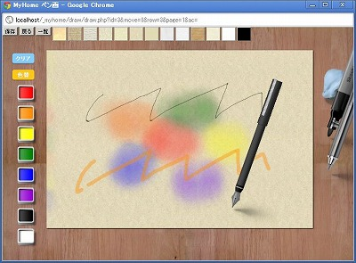
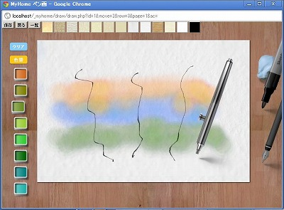
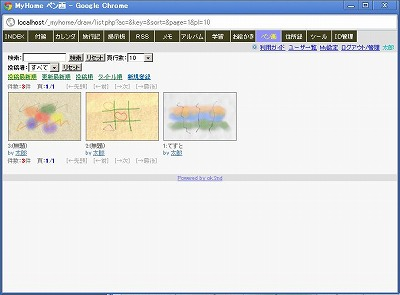
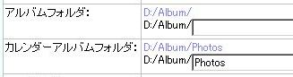
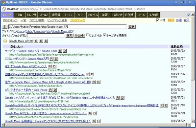
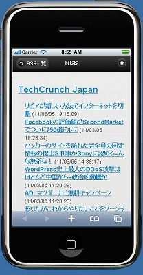
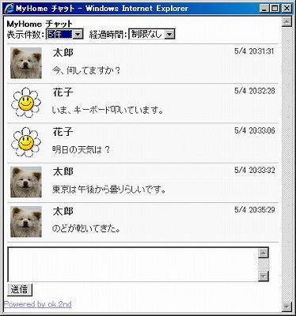
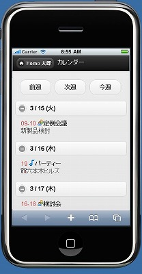
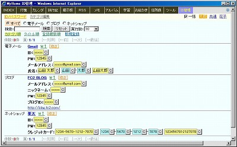

MyHome Portal 変更履歴
以下は、バージョン3.34以前の履歴です。 最新(3.35以降)の履歴に戻る
MyHome Portal Ver.3.34 (2011/07/24)
- 変更点
- コンテンツ「ペン画」を
https://github.com/Skookum/ghostwriter
で公開されているGhostwriterのバージョンではなく、
https://developer.mozilla.org/en-US/demos/detail/ghostwriter-art-studio
で公開されているバージョンを使用するように変更しました。
主な変更点として、スプレーガンと消しゴムが使えます。また、作成した画像データは、Base64エンコーデイングしたPNG画像として保存します。Base64データ内の+はスペースに変換してデータベースに保存します。




Ver.3.33の「ペン画」とは保存データの互換性がありませんので、Ver.3.33で作成した画像の表示、修正はできません。
Ver.3.33で作成した「ペン画」データを全て削除する場合は、以下のコマンドを実行してください。MySQL管理者ユーザーrootのパスワードを「kanri789」とした場合で示します。
mysql -u root -pkanri789 use _mydb_draw; truncate table m_draw; truncate table m_comment; exit;
- アルバムで、拡張子「mts」のファイルも、m2tsと同様に動画再生できるようにしました。m2tsと同様にflv変換しての再生のため、画質はよくありません。既に実運用中の場合、実運用定義ファイルの以下の行を修正してください。
define("IS_VIDEO_EXT", "avi,flv,mpg,mov,swf,wmv,m2ts,mts,mp4"); define("IS_VIDEO_MIME","video/x-msvideo,video/x-flv,video/mpeg,video/quicktime,application/x-shockwave-flash,video/x-ms-wmv,video/avc,video/avc,video/mp4"); define("photo_VIDEO_PREVIEW_EXT", "flv,mp4,mp3,wmv,mpg,mov,m2ts,mts"); define("VIDEO_PREVIEW_CONVERT", "mpg,mov,m2ts,mts"); define("GET_URL_FILE_TYPE_SELECTS_tools", "jpeg,jpg,gif,png,wmv,flv,avi,mpg,mp4,mov,m2ts,mts,swf,zip,lzh"); - ffmpegでm2ts,mtsをflvに変換するオプションに-deinterlaceを追加。画像がギザギザ(?)になるのが解消されます。「お気に入りの動画を携帯で見よう」の管理人さんからのアドバイスです。
http://blog.k-tai-douga.com/article/46744896.htmlのコメント欄にて。
既に実運用中の場合、実運用定義ファイルの以下の行を修正してください。
define("FFMPEG_CONVERT_OPTION_M2TS", "-ar 44100 -b 700k -deinterlace");アルバムで既に動画再生した場合は、___flv___フォルダに変換済みのflvファイルが残っているため、再変換しません。再変換する場合は、___flv___フォルダ以下のファイルを削除してください。 - 各コンテンツのHTMLタイトルを実運用定義ファイルで変更可能にしました。
- 主な変更モジュール
・draw/一式
・photo/video-view.php, video-convert.php
・__common__/__define_common.php
・__define_common_my_sample.php
MyHome Portal Ver.3.33 (2011/07/03)
- 変更点
- 新コンテンツ「ペン画」を追加しました。万年筆や水性マーカーペンタッチの絵が描けます。
JavaScriptライブラリ「Skookum/Ghostwriter」を使っています。Chrome、Firefoxで、動作を確認しています。IE9では正常動作しません。
https://github.com/Skookum/ghostwriter
「ペン画」のデータは、JavaScriptライブラリ「json2.js」を使ってJSON形式でデータベースに登録します。
https://github.com/douglascrockford/JSON-js/blob/master/json2.js
登録データはサムネイル一覧表示できます。
オリジナルのGhostwriterでは、ペンの色設定が出来なくなっていましたが、色設定できるようにしました。また、カレーパレットも切り替えできるようにしました。
背景の紙のテクスチャも変更できるようにしました。
- My設定で、カレンダー連携のアルバムフォルダの設定を、アルバムフォルダ設定と別に設定できるようにしました。
 -
Ver.3.32以前で既に環境を構築済みの場合は、以下の手順で「ペン画」の環境設定をしてください。コマンドプロンプトで以下を実行してください。以下、MySQL管理者ユーザーrootのパスワードを「kanri789」、インストールドライブを「D:」として説明します。
≪サンプルデータベース作成≫mysql -u root -pkanri789 create database _db_draw; exit d: cd "D:\xampp\htdocs\_myhome\z_db_backup" mysql -u root -pkanri789 _db_draw < _db_draw.bk.txt mysql -u root -pkanri789 _db_draw < create_view_db_draw.txt mysql -u root -pkanri789 GRANT SELECT,INSERT,UPDATE,DELETE ON _db_draw.* TO myhome@localhost; FLUSH PRIVILEGES; exit
≪実運用データベース作成＆環境設定≫
＊実運用データベース作成
・MySQLを一旦停止します。
net stop mysql
・データベース「_db_draw」をコピーして、実運用データベース「_mydb_draw」を作成します。
mkdir D:\xampp\mysql\data\_mydb_draw copy D:\xampp\mysql\data\_db_draw\* D:\xampp\mysql\data\_mydb_draw
・MySQLを再起動します。
net start mysql
・データベースのビューを作成します。
d: cd "D:\xampp\htdocs\_myhome\z_db_backup" mysql -u root -pkanri789 _mydb_draw < create_view_mydb_draw.txt
・データベースのアクセス権を設定します。
mysql -u root -pkanri789 GRANT SELECT,INSERT,UPDATE,DELETE ON _mydb_draw.* TO myhome@localhost; FLUSH PRIVILEGES; exit;
・サンプルデータを削除します。
mysql -u root -pkanri789 use _mydb_draw; truncate table m_draw; truncate table m_comment; exit;
＊実運用定義ファイル __define_contents_my.phpに、以下を追加してください。
$navi_item[] = array("href"=>"draw/", "query"=>"arg=session", "name"=>"ペン画");＊実運用定義ファイル __define_common_my.phpに、以下を追加してください。
define("_DB_SCHEMA_draw", "_mydb_draw"); -
データベース「_db_account」/「_mydb_account」のテーブル「m_account」に列「c_album_calendar_folder」を追加しました。
既に前のバージョンで実運用中の場合は、以下の手順で、列の追加とデータの更新作業を行ってください。
MySQL管理者ユーザーrootのパスワードを「kanri789」、インストールドライブを「D:」として説明します。
《サンプルDBの場合》
mysql -u root -pkanri789 use _db_account; ALTER TABLE m_account ADD c_album_calendar_folder varchar(255) NOT NULL AFTER c_album_folder; exit; D: cd "D:\xampp\htdocs\_myhome\z_db_backup" mysql -u root -pkanri789 _db_account < create_view_db_account.txt
《実運用DBの場合》
mysql -u root -pkanri789 use _mydb_account; ALTER TABLE m_account ADD c_album_calendar_folder varchar(255) NOT NULL AFTER c_album_folder; exit; D: cd "D:\xampp\htdocs\_myhome\z_db_backup" mysql -u root -pkanri789 _mydb_account < create_view_mydb_account.txt
- 追加モジュール
・draw/一式
・scripts/json2/一式
・style/original/draw.css
・z_db_backup/_db_draw.bk.txt, create_view_db_draw.txt, create_view_mydb_draw.txt - 変更モジュール
・__common__/__define_common.php, __define_contents.php, include-common-all.php
・account/__include-login.php, myprofile.php, edit-myprofile.php
・calendar/_my_calendar.php
・db_tool/backup-mydb.php
・__define_common_my_sample.php, __define_contents_my_sample.php
・db_backup.txt.php, db_restore.txt.php, mydb_restore.txt.php, setup-sample.php
MyHome Portal Ver.3.32 (2011/06/22)
- 変更点
- CSS関連一部修正。
- 変更モジュール
・calendar/input.php
・tools/file-manager.php, code-file-view.php, __include-common-excel-graph.php
・style/original/common.css, tools_common.css, calendar.css, tools-excel-graph.css
MyHome Portal Ver.3.31 (2011/06/21)
- 変更点
- 「INDEX」の「ブックマーク」のタイトル検索に、サブディレクトリまで検索できるオプションを追加。
 - 「INDEX」の「ブックマーク」の検索で、スペース区切りで複数キーワードAND検索もできるようにしました。
- 「住所録」の「マップ」や「ID管理」の「↑」が、Chromeの場合、ボタンを押す都度新しいウインドウが開くようになっていなかったのを修正。
- common.css、tools_common.cssの一部変更。font-family指定をbodyから*に変更。関連モジュールも合わせて修正。
- 主な変更モジュール
・index/list-url.php, list-my-template-thumbnail.php
・id-manager/list-my-template.php
・abook/list-my-template.php, list-my-template-***.php
・__common__/include-common-all.php
・style/original/common.css, tools_common.css, index.css
MyHome Portal Ver.3.30 (2011/05/29)
- 変更点
- Chromeで、「INDEXトップページ」の設定が「リンク先を新しいウインドウで開く」の場合、Google検索ボタンを押す都度新しいウインドウが開くようになっていなかったのを修正。
- 変更モジュール
・index/__define_index_search.php
・__define_index_search_my_google.php, __define_index_search_my_yahoo.php
MyHome Portal Ver.3.29 (2011/05/29)
- 変更点
- ツール「縦計だけの表計算」が、Ver.3.26以降、セルに式を入れた時に縦計がされなくなってしまっていたのを修正。
- ツール「縦計だけの表計算」でEnterキーでTabキー同様にテーブル・セル移動が出来るようにしました。
Enterキーでのテーブル・セル移動には、以下のJavaScriptを使わせていただきました。
≪EnterキーをTabキーに変換(Google Chrome対応)≫
http://code.nanigac.com/source/view/686

- photo/index.php, slide.php内で、関数コール側で引数参照渡しになっていた部分を修正。
get_width_height($imgpath, &$width, &$height); ↓↓↓ get_width_height($imgpath, $width, $height);
- 変更モジュール
・tools/calc.php
・photo/index.php, slide.php
MyHome Portal Ver.3.28 (2011/05/25)
- 変更点
- mb_convert_encoding()で、変換前の文字エンコーディングに'auto'を指定した場合に、正しく変換がされないケースがあるので、
define("MB_CONVERT_ENCODING_AUTO", "ASCII,JIS,UTF-8,EUC-JP,SJIS-win,SJIS");を定義して、これを使うようにしました。
$html = mb_convert_encoding($html, 'UTF-8', MB_CONVERT_ENCODING_AUTO);
- MySQL管理ツールのCSVインポート(csv-import.php)で使っているfgetcsv()が全角英数字を正常処理できないため、mb_convert_kana()で全角英数字を半角にしてから処理するように変更。
- 変更モジュール
・__common__/__define_common.php
・db_tool/csv-import.php
・tools/html-get-url-img.php, html-text-mail.php, html-text-multi.php, tategaki.php
・__define_common_my_sample.php
MyHome Portal Ver.3.27 (2011/05/18)
- 変更点
- サンプルDBセットアップ処理「setup-sample.php」でエラーを拾えていなかったのを修正。
- 実運用環境バックアップ処理「db_tool/backup-mydb.php」でエラーを拾うように修正。また、実行中のバックアップコマンドmysqldumpを表示するようにしました。
- 実運用環境バックアップ処理「db_tool/backup-mydb.php」でmysqldumpを連続処理するとエラーになる場合があるようなので、データベース単位に時間間隔を空けてバックアップ処理できるようにしました。
- 実運用データベース・リストア用サンプル・スクリプトmydb_restore.txt.php追加。
- MySQLのバージョンにより、mysqldumpで作成されるバックアップファイルのCREATE TABLEのUSING BTREEの書式が違っているようで、新しいバージョンでバックアップしたデータを古いバージョンでリストアするとエラーが発生するようです。
例えば、MySQL 5.1.33でバックアップされたデータは、MySQL 5.0.51aではエラーになってリストアできません。USING BTREEの書式を修正すれば、リストア可能なようですが。 MyHome PortalのVer.3.27では、サンプルDBのファイルがMySQL 5.1.33でバックアップされたものが混在しますので、MySQLのバージョンによっては、リストアできない可能性があります。-- (MySQL 5.0.51a) MySQL dump 10.11 PRIMARY KEY USING BTREE (`id_category`) -- (MySQL 5.1.33) MySQL dump 10.13 Distrib 5.5.8, for Win32 (x86) PRIMARY KEY (`id_category`) USING BTREE
- 「__define_common_my_sample.php」の「FILE_MANAGER_CIPHER_SEED」設定箇所に注意事項追加。ファイル暗号化では、PHPのCrypt_Blowfishを使っていますが、XAMPPのバージョンによっては、Crypt_Blowfishがインストールされないようです。「/xampp/php/PEAR/Crypt/Blowfish.phpがインストールされている事を確認の上、設定してください。
- スタイルシートの一部変更をしました。font-sizeを基本的に%指定からpx指定に変更。
IEではボタンの左右に余分な余白が付いてしまう問題を、INDEXトップページでは、width指定することで回避していましたが、cssで"overflow: visible;"を指定することで回避するようにしました。ただし、IE6はinput[type="button"]が使えないため、対象外です。inputで指定すると弊害が出るため。
その他、common.css, tools_common.cssの基本部分を見直して以前より少しシンプルにしました。 - アルバムのギャラリ3,5を、それぞれ「3D Wall Gallery」「Supersized - Fullscreen Slideshow jQuery Plugin」を使ったものに変更。旧ギャラリ3,5は、それぞれgallery88.php, gallery99.phpとして残してあります。
≪3D Wall Gallery≫
http://tympanus.net/codrops/2011/02/02/3d-wall-gallery/
≪Supersized - Fullscreen Slideshow jQuery Plugin≫
http://www.buildinternet.com/project/supersized/
- おもな変更モジュール
・setup-sample.php
・db_tool/backup-mydb.php
・style/original/common.css, tools_common.css, index.css, bbs.css, id-manager.css
・bbs/input.php, view.php
・index/__define_index_search.php
・__define_index_search_my_google.php, __define_index_search_my_yahoo.php
・photo/gallery3.php, gallery5.php - 追加モジュール
・photo/3DWallGallery/* 一式
・photo/supersized/* 一式
・photo/css/jquery.ui.core.css, jquery.ui.slider.css, jquery.ui.theme.css
・photo/scripts/jquery-ui.min.js
・mydb_restore.txt.php
MyHome Portal Ver.3.26 (2011/04/27)
- 変更点
- PHP5.3.?の仕様変更により、「Undefined index」や「Call-time pass-by-reference has been deprecated」等のエラーが出てしまうようなので、とりあえずの対策としてエラーが出ないようにしました。
- __define_common.php、include-common-all.phpに
error_reporting(E_ERROR & ~E_NOTICE & ~E_PARSE);
を追加。Undefined index等のエラーを出さないため。 - __define_common.phpで、データベース名定義の一部が"で括られていなかったのを修正。
- .htaccessに、
php_flag allow_call_time_pass_reference On
を追加。関数コールの引数参照渡しのエラーを出さないため。 - カレンダーのスケジュールにURL等の長い英文字列があった場合に、テーブル枠内で折り返して表示するようにしました。
CSSで、<td>タグに、以下を指定しています。
word-break: break-all;
- 変更モジュール
・__common__/__define_common.php, include-common-all.php
・style/original/calendar.css, index.css
・.htaccess
MyHome Portal Ver.3.25 (2011/03/30)
- 変更点
- 「カレンダー」の入力画面のプレビューを●ボタンを押す方式でなく、onkeyup()イベントでリアルタイムにプレビューするようにしました。
- 「カレンダー」の入力画面の予定済スケジュールを非表示に出来るようにしました。
- IE以外で、「カレンダー」「旅行記」「メモ」「利用ガイド」の入力画面のtextareaのリサイズを、大小ボタンを押す方式でなく、自動リサイズ方式にしました。jQueryプラグイン「autoResize」を利用しています。IEでは動作が不安定なので、大小ボタン方式のままとしました。
http://james.padolsey.com/javascript/jquery-plugin-autoresize/ - 追加モジュール
・scripts/autoresize.jquery.min.js - 変更モジュール
・calendar/input.php
・diary/input.php, item-input.php
・memo/input.php
・guide/input.php
MyHome Portal Ver.3.24 (2011/03/06)
- 変更点
- スマートフォン・スケジュール表示を、他のメンバー分も可能にしました。
- jQuery Mobileを使ったスマートフォン用RSSリーダー機能を追加しました。myHome Portal本体で設定したRSSを参照できます。
 - jQuery Mobileを使ったスマートフォン用チャット機能を追加しました。

- アカウントの「My設定」で、プロファイル用のアイコン画像を登録できるようにしました。アイコン画像は、チャットなどで使います。
- myHome Portal本体のチャットのページレイアウトを変更しました。アイコン画像も表示します。
 - ツール「テキスト縦書き表示」のロジックを一部改良。青空文庫
のHTML版をURL指定した場合等になるべくゴミが出ないようにしました。

- ツール「テキスト縦書き表示」を、システム管理者用でなく全ユーザー用に変更しました。
- 関数my_file_get_contents()を、include-common-all.php内に移動。
- データベース「_db_account」/「_mydb_account」のテーブル「m_account」に列「c_profile_image」を追加しました。
既に前のバージョンで実運用中の場合は、以下の手順で、列の追加とデータの更新作業を行ってください。MySQL管理者ユーザーrootのパスワードを「kanri789」、インストールドライブを「D:」として説明します。
《サンプルDBの場合》
mysql -u root -pkanri789 use _db_account; ALTER TABLE m_account ADD c_profile_image varchar(50) NOT NULL; exit; D: cd "D:\xampp\htdocs\_myhome\z_db_backup" mysql -u root -pkanri789 _db_account < create_view_db_account.txt
《実運用DBの場合》
mysql -u root -pkanri789 use _mydb_account; ALTER TABLE m_account ADD c_profile_image varchar(50) NOT NULL; exit; D: cd "D:\xampp\htdocs\_myhome\z_db_backup" mysql -u root -pkanri789 _mydb_account < create_view_mydb_account.txt
- データベース「_db_chat」/「_mydb_chat」のビューを作りなおしてください。
MySQL管理者ユーザーrootのパスワードを「kanri789」、インストールドライブを「D:」として説明します。
《サンプルDBの場合》
D: cd "D:\xampp\htdocs\_myhome\z_db_backup" mysql -u root -pkanri789 _db_chat < create_view_db_chat.txt
《実運用DBの場合》
D: cd "D:\xampp\htdocs\_myhome\z_db_backup" mysql -u root -pkanri789 _mydb_chat < create_view_mydb_chat.txt
- 実運用定義ファイル__define_common_my.phpに以下を追加してください。
define("ATTACH_FILE_FOLDER_account", "../../_attach/account/"); - 添付ファイル用ディレクトリを作成してください。(ドライブが「D:」の例。)
mkdir D:\xampp\htdocs\_attach\account
- 追加モジュール
・_mobile/chat/*
・_mobile/rss/*
・_mobile/member/*
・_mobile/twitter/*
・_mobile/images/blank.jpg
・_mobile/js/jquery.cookie.js - 変更モジュール
・_mobile/__common__/include-common-mobile.php
・_mobile/calendar/index.php
・_mobile/index/index.php
・_mobile/js/ajaxDisable.js
・_myhome/__common__/__define_common.php, include-common-all.php, include-common-mp-list.php
・_myhome/account/__define.php, myprofile.php, edit-myprofile.php, list-user.php
・_myhome/chat/index.php, read.php, read-min.php
・_myhome/tools/index.php, tategaki.php, tategaki-form.php
・_myhome/z_db_backup/create_view_db_chat.txt, create_view_mydb_chat.txt
・_myhome/z_db_backup/_db_account.bk.txt, _db_chat.bk.txt
・_myhome/style/original/index.css, chat.css
・_myhome/関数my_file_get_contents()を使っているモジュール
MyHome Portal Ver.3.23 (2011/03/02)
- 変更点
- jQuery Mobileを使ったスマートフォン・スケジュール表示が、iPhoneエミュレーターiBBDemo2で動作確認すると、セッション処理やページ遷移がきちんと動作していなさそうなのを修正。
・ログインのモジュールlogin/index.phpとlogin/login-submit.phpを1つのファイルにしました。
・携帯電話用の以下の設定を外しました。
ini_set('session.use_trans_sid', '1'); - 変更モジュール
・_mobile/login/index.php
・_mobile/__common__/include-common-mobile.php - 削除モジュール
・_mobile/login/login-submit.php
MyHome Portal Ver.3.22 (2011/03/01)
- 変更点
- jQuery Mobile (Alphaバージョン)(http://jquerymobile.com/)
を使った「スマートフォン・スケジュール表示機能」を作成しました。ディレクトリを「_mobile」にしています。ローカルでの検証は、Chromeやスマートフォンエミュレータなどで、
http://localhost/_mobile/
にアクセスすることで、確認できます。本人のスケジュール表示機能だけです。
 - 開発者本人は、iPhoneやAndroid端末などを持っていませんし、インターネット上のサーバーも持っていませんので、実機による検証はしていません。セッション情報が保持されるのか不明です。
インターネット上での実機による動作確認や運用については、セキュリティ上の問題等、一切の責任を持てませんので、自己責任にてお願いいたします。
動作には、_myhome Poratal本体の以下のファイルも必要です。
・_myhome/__common__/__define_common.php, include-common-all.php
・_myhome_myset/__define_common_my.php - 作成にあたっては、吉川徹氏のサンプルを参考にさせていただきました。
http://yst.web.infoseek.co.jp/jquerymobile/
http://yst.web.infoseek.co.jp/jquerymobile/sample.html - HAWHAWを使った携帯電話スケジュール表示機能「_mobile」のディレクトリを「_mobile_HAWHAW」に変更しました。
- 追加モジュール
・_mobile/*
MyHome Portal Ver.3.21 (2011/02/23)
- 変更点
- 「INDEX」「カレンダー」「旅行記」「掲示板」「メモ」などの一覧検索で、全角/半角、カタカナ/ひらがなを区別せずに同一視して検索するように仕様変更しました。SQL文で、collate utf8_unicode_ciを指定しています。
一覧検索で、全角/半角、カタカナ/ひらがなを同一視しない場合、実運用定義ファイルで、MP_LIST_SELECT_COLLATEを""にしてください。define("MP_LIST_SELECT_COLLATE", ""); - 上記一覧検索で、全角/半角、カタカナ/ひらがなを同一視した場合、「メモ」などの検索キーワードのハイライト表示も、同様にハイライトするようにしました。
- 変更モジュール
・__common__/__define_common.php, include-common-all.php
・diary/list.php
MyHome Portal Ver.3.20 (2011/02/16)
- 変更点
- 「カレンダー」「旅行記」「住所録」それぞれのGoogle Maps API V3を使ったマップが、1地点の場合、地図が拡大されすぎてしまうのを修正。
- 「テキスト縦書き表示 (IEのみ)」で、H1タグ内文字をHTMLタイトルとするようにしました。フォーム入力版では、別途HTMLタイトルを指定できるようにしました。
- 「ID管理」で、W↑をクリックすると、ID&パスワードの小ウインドウと該当ホームページのウインドウ2つが開きますが、ChromeではID&パスワードの小ウインドウが、メインウインドウの下に隠れてしまう問題を修正。
window.open()で、ウインドウを開く位置指定でscreenX,screenYを追加。ただ、screenX,screenYが0だと正常動作しないので、実運用定義ファイルの次の定数を0以外に変更してください。
define("POP_WIN1_LEFT_id_manager", 10); define("POP_WIN1_TOP_id_manager", 10); - 「ID管理」で、クリップボードコピー[C]ボタンを押してもZero Clipboardを使用している関係でボタンの形状が変化しないのを改善。クリック時点で白くハイライトするようにしました。
- 変更モジュール
・abook/maps-abook-v3.php
・calendar/maps-include-v3.php
・diary/__include-maps-v3.php
・tools/google-maps-earth-multi-v3.php, tategaki-form.php, tategaki.php
・id-manager/__define.php, list-my-template.php
・scripts/zeroclipboard/ZeroClipboard-ok2nd.js
・__common__/__define_common.php
・__define_common_my_sample.php
MyHome Portal Ver.3.19 (2011/02/10)
- 変更点
- 「ID管理」に、クリップボードへのコピーボタン機能を追加。
IDやパスワードの右の「C」ボタンをクリックすると、クリップボードにその文字列をコピーします。
各サイトのログイン画面にそのままペーストできます。
クリップボードへのコピーには、Zero Clipboardを利用。
http://code.google.com/p/zeroclipboard/
 - 「アルバム」「ギャラリ5」で、画像サイズをSELECTメニューで変更できるようにしました。
SELECTメニューの選択肢は、実運用定義ファイルで、設定できます。
例) define("MERGING_IMAGE_BOXES_SIZE_SELECT", "100,110,120,130,140,150,160,170,180,190,200"); - 「アルバム」「ギャラリ5」の背景画像を設定できるようにしました。
実運用定義ファイルで、"MERGING_IMAGE_BOXES_BACKGROUND"を設定すると、そのディレクトリ内の画像ファイルを背景画像として使います。
例) define("MERGING_IMAGE_BOXES_BACKGROUND", "../../_myhome_myset/gallery5_background");画像ファイルが複数ある場合、ランダムに背景画像を切り替えます。画像ファイルの拡張子は、jpg,jpeg,png,gifを対象にします。
- 各コンテンツの検索機能が、検索キーワード入力後、Returnキーでも動作するように修正しました。
- Google Maps JavaScript API V3を使ったマップページのマップタイプ切り替えメニューの形式が変更されていたので、それに合わせてマップの地点一覧のサイドバーの位置を少し下に下げました。
対象は、カレンダー、旅行記、住所録のそれぞれのマップページと、Google Maps (複数地点) API V3版。 - ツール「Google Maps (複数地点) API V3版」で検索地点が1地点の場合、地図が拡大されすぎてしまうのを修正。
- ツール「テキスト縦書き表示 (IEのみ)」を修正。文章をファイルではなく、フォームから入力できるタイプも用意。行間やフォントタイプの指定も可能にしました。

- 各ページのHTMLのDOCTYPEをhtml5に合わせて、
<!DOCTYPE html>
に、変更。IE6も含めて、これで特に支障はなさそうです。 - 変更モジュール
・__common__/include-common-mp-list.php
・abook/maps-abook-v3.php
・calendar/__html-my-header-maps.php, maps-alone.php
・diary/__html-my-header-maps.php, maps-diary.php
・id-manager/list.php, list-my-template.php, view-idpass.php, _include_idpass.php
・photo/gallery5.php
・photo/MergingImageBoxescss/css/style-ok2nd.css
・tools/google-maps-earth-multi-v3.php
・tools/index.php, tategaki.php
・__define_common_my_sample.php - 追加モジュール
・scripts/tategaki-form.php
・scripts/zeroclipboard/*
MyHome Portal Ver.3.18 (2011/02/07)
- 変更点
- 3.17で追加した「アルバム」の「ギャラリ5」が、ブラウザがIE6の場合、テンポラリディレクトリに大量にファイルが残ってしまうことが判明。原因は不明ですが、サムネイル表示時点でなく、個別の画像をクローズアップした時点でimg-view.phpが複数回呼ばれてしまいます。
ギャラリ5の仕様を変更し、テンポラリファイル名をランダムでなく、ユーザーアカウント毎に固定のファイル名24個として、テンポラリディレクトリから消さない方式にしました。同一ユーザーアカウントで複数画面を開いて、別ディレクトリの画像を表示した場合、違う画像が表示される可能性があります。 - 既にIE6でギャラリ5を試された場合、ERROR_LOG_DIRで指定したディレクトリにjpgファイルが残っている可能性がありますので、削除をお願いいたします。
- ギャラリ5のテンポラリディレクトリ指定を"ERROR_LOG_DIR"から"photo_GALLERY_5_TEMP_DIR"に変更しました。
実運用定義ファイルで"photo_GALLERY_5_TEMP_DIR"を指定してください。
例) define("photo_GALLERY_5_TEMP_DIR", "D:/xampp/htdocs/_myhome_myset/gallery5"); - 変更モジュール
・photo/index.php, gallery5.php, img-view.php, img-view-include.php
・__define_common_my_sample.php
MyHome Portal Ver.3.17 (2011/02/06)
- 変更点
- 「アルバム」に、JavaScriptライブラリ「Merging Image Boxes with jQuery」を利用した画像ギャラリーを追加しました。
http://tympanus.net/codrops/2010/11/30/merging-image-boxes/
24枚単位で表示します。
[Esc]キーで元のアルバムページに戻ります。[Enter], [Space],[→]キーで次の24枚に移動します。[←]キーで前の24枚に移動します。
この画像ギャラリーを使う場合、実運用定義ファイルで、photo_GALLERY_5_USEを"YES"にしてください。
define("photo_GALLERY_5_USE", "YES");実運用定義ファイルで、次の2つの定数も定義されている必要があります。
define("photo_JPEG_RESIZE", "YES"); define("ERROR_LOG_DIR", "D:/?????");サムネイル画像1つのサイズを、実運用定義ファイルで設定できます。
define("MERGING_IMAGE_BOXES_SIZE", 125); - 「INDEX」の「ブックマーク」とツール「ファイルマネージャー」の検索機能をファイル名だけでなくフォルダ名も対象にするように仕様変更しました。
- 変更モジュール
・photo/index.php, mg-view.php, img-view-include
・index/list-url.php, _add_header-list-url.php
・tools/file-manager.php
・__define_common_my_sample.php - 追加モジュール
・photo/MergingImageBoxes/*
・photo/gallery5.php
MyHome Portal Ver.3.16 (2011/01/29)
- 変更点
- 新コンテンツ「お絵かき」を追加。「SVG-edit」(ver.2.5.1)を使っています。
http://code.google.com/p/svg-edit/
「お絵かき」のデータは、SVGデータとしてデータベースに登録できます。
登録データはサムネイル一覧表示できます。サムネイルは、画像の縦横比を3:4として縮小します。
登録データは修正、削除できます。
登録データは、他ユーザーのものを含めて自分のデータとしてコピーして再利用できます。
IE6, 7, 8では、SVG-editは動作しませんが、Google Chrome Frame pluginをインストールすると、SVG-editが動作するようになります。
http://code.google.com/intl/ja/chrome/chromeframe/
画像表示、サムネイル一覧ができるのはChromeのみです。


- 「アルバム」に「点描アニメ」機能を追加。以下の「tenbyou.js」を使っています。
＜canvas要素のピクセル操作で点描っぽいお絵描きアニメーション＞
http://funenplacanen.com/blog/163
https://github.com/ykhs/tenbyou
サーバーロ－カルの任意の写真画像を点描アニメーション表示できます。
インターバル時間と描画レートを変更して、実行できます。
IE6,7では動作しません。IE8以降は未確認。
- Ver.3.16以前で既に環境を構築済みの場合は、以下の手順で「お絵かき」の環境設定をしてください。コマンドプロンプトで以下を実行してください。以下、MySQL管理者ユーザーrootのパスワードを「kanri789」として説明します。また、インストールディレクトリをDドライブとして説明します。
≪サンプルデータベース作成≫
mysql -u root -pkanri789 create database _db_svg; exit d: cd "D:\xampp\htdocs\_myhome\z_db_backup" mysql -u root -pkanri789 _db_svg < _db_svg.bk.txt mysql -u root -pkanri789 _db_svg < create_view_db_svg.txt mysql -u root -pkanri789 GRANT SELECT,INSERT,UPDATE,DELETE ON _db_svg.* TO myhome@localhost; FLUSH PRIVILEGES; exit
≪実運用データベース作成＆環境設定≫
＊実運用データベース作成
・MySQLを一旦停止します。
net stop mysql
・データベース「_db_svg」をコピーして、実運用データベース「_mydb_svg」を作成します。
mkdir D:\xampp\mysql\data\_mydb_svg copy D:\xampp\mysql\data\_db_svg\* D:\xampp\mysql\data\_mydb_svg
・MySQLを再起動します。
net start mysql
・データベースのビューを作成します。
d: cd "D:\xampp\htdocs\_myhome\z_db_backup" mysql -u root -pkanri789 _mydb_svg < create_view_mydb_svg.txt
・データベースのアクセス権を設定します。
mysql -u root -pkanri789 GRANT SELECT,INSERT,UPDATE,DELETE ON _mydb_svg.* TO myhome@localhost; FLUSH PRIVILEGES; exit;
＊実運用定義ファイル __define_contents_my.phpに、以下を追加してください。
$navi_item[] = array("href"=>"svg/", "query"=>"arg=session", "name"=>"お絵かき");＊実運用定義ファイル __define_common_my.phpに、以下を追加してください。
define("_DB_SCHEMA_svg", "_mydb_svg"); - 変更モジュール
・__common__/__define_contents.php, __define_common.php
・photo/index.php, __define.php
・style/original/photo.css
・__define_common_my_sample.php, __define_contents_my_sample.php
・db_tool/backup-mydb.php
・setup-sample.php - 追加モジュール
・svg/*
・photo/tenbyou.php
・photo/scripts/tenbyou.jsv ・style/original/svg.css
・z_db_backup/_db_svg.bk.txt, create_view_db_svg.txt, create_view_mydb_svg.txt
MyHome Portal Ver.3.15 (2011/01/22)
- 変更点
- 「住所録」で、1件単位の新規登録、修正ができる画面を用意。一覧で名前をクリックすると、修正画面になります。
- 「住所録」の1件単位の新規登録、修正ができる画面では、郵便番号から住所を検索できる機能を付けました。郵便番号を入力して「住所取得」ボタンを押すと、住所欄に住所が入ります。修正の場合、「住所取得」ボタンでは、住所を上書きしてしまいますので、「Check」ボタンを押してください。住所欄の上に、検索された住所を表示します。
住所検索には、「hokaccha/js-zip2address」を使わせてさせていただきました。Google日本語入力APIを利用しているので、常に最新の郵便番号対応で住所検索ができます。
https://github.com/hokaccha/js-zip2address
- ツール「ファイルマネージャー」、「PHP/JavaScript ソースコード表示&編集＋ファイルマネージャーを、ID管理ログインが必要とするように設定可能にしました。実運用定義ファイルで、以下を定義してください。
define("FILE_MANAGER_ID_PASSWORD_USE", "YES"); - 「アルバム」のディレクトリ表示位置を左側にした場合に、レイアウトが崩れるようになっていたのを、修正しました。
- 変更モジュール
・abook/list.php, list-my-template.php
・abook/list-my-template-hyakumeizan.php, list-my-template-sekaiisan.php
・abook/list-my-template-tetsudo-eki.php
・photo/index.php
・style/original/abook.css
・tools/file-*.php, folder-*.php, code-file-*.php
・__define_common_my_sample.php - 追加モジュール
・abook/input.php
・scripts/hokaccha/*